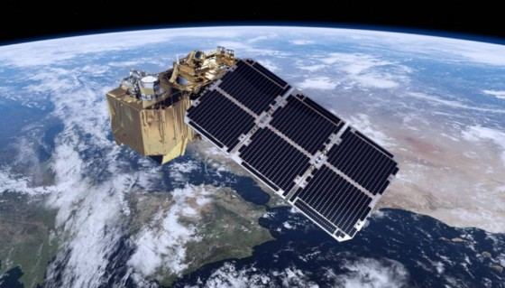

Brasil, Chile e Colômbia se unem à rede de satélites européia
Eventos climáticos, uso da terra, a atividade do oceano ou efeitos das alterações climáticas são algumas das áreas que o Brasil, Chile e Colômbia serão capazes de monitorar em profundidade e quase em tempo real graças a um acordo que lhes dará acesso imediato a informações capturadas por satélites do programa ambiental europeu Copernicus, uma iniciativa conjunta da Comissão Europeia e da Agência Espacial Europeia.{kind=link}
Brasil, Chile e Colômbia se unem à rede de satélites européia
Com a assinatura de dois acordos de cooperação em São Paulo, Brasil, este mês, os três países sul-americanos tornaram-se aptos para hospedagem em servidores em seus territórios os dados de acesso aberto e gratuito coletados de 30 satélites Sentinela e disponibilizar seu banco de dados de imagens, que data de 2014.
Stéphane Ourevitch, supervisor do Gabinete de Apoio Copérnico, disse que estes três países "foram os mais pró-ativos na busca de acordos de cooperação com a União Europeia sobre o Copenicus", o que permitiu os acordos.
Os satélites fornecem informações em seis áreas: manejo do solo, ambientes marinhos, atmosfera, resposta a emergências, segurança e mudanças climáticas. Isto permite gerar aplicações científicas, produtivas, comerciais e de política pública, como gerenciar e mitigar desastres naturais, administrar fenômenos migratórios, monitorar epidemias ou estabelecer políticas de segurança e de fronteira, entre outras.
O acordo foi assinado em nome da Comissão Europeia por Philippe Brunet, Diretor para a Política Espacial, Copérnico e Defesa, enquanto em países sul-americanos fizeram os líderes do Ministério da Ciência, Tecnologia, Inovação e Comunicação do Brasil, a Secretaria de Telecomunicações do Chile e do Instituto de Hidrologia, Meteorologia e Estudos Ambientais (IDEAM), da Colômbia.
No Brasil, os dados serão processados no Instituto Nacional de Pesquisas Espaciais (INPE), na Colômbia pelo IDEAM e no Chile pela Universidade do Chile.
"Isso envolve a implementação de um sistema de distribuição de dados do Copernicus, incluindo armazenamento dos dados coletados pelos satélites em bancos de dados no país para que eles possam ser acessado por aqueles que necessitam de forma aberta e gratuita", disse Florencio Utreras, coordenador de projetos da Universidade do Chile e professor da Escola de Engenharia.
O especialista acrescenta que isso permitirá que instituições estatais, acadêmicas e privadas acessem informações de satélite com muito mais eficiência e rapidez do que hoje, nas quais precisam fazer o download de servidores na Europa.
"A velocidade de download pode ser cerca de 10 vezes mais rápida, com a consequente economia de tempo e recursos de telecomunicações", diz Utreras.
Enquanto isso, os três países vão acessar dados de suas próprias redes de sensores e instrumentos de observação terrestre, oceânica e atmosférica, que vai avançar o desenvolvimento de produtos conjuntos entre as instituições dos países em concordância.
Chile usou dados de Copernicus para estimar as emissões de CO2 durante os incêndios devastadores que atingiram o país em 2017 e terremoto de 8,4 graus de magnitude que atingiu em 2015 a Região de Coquimbo.
"Os satélites Sentinel permitiram fazer comparações das deformações da terra antes e após o terremoto em toda a área afetada e remotamente avaliar seus danos ou consequências sem ir ao local, permitindo que as autoridades atuem muito mais rápido em situações de desastre" diz Sergio Barrientos, diretor do Centro Nacional de Sismologia do Chile.
A maior frequência com que os satélites Copenicus fornecem imagens do mesmo ponto é outra das suas vantagens.
Ricardo Galvão, diretor do INPE, disse à Agência Brasil que isso vai acompanhar mais diretamente o desmatamento da Amazônia e do Cerrado, ao contrário do intervalo de 10 dias que levam os satélites brasileiro, lapso esse que é usado por aqueles que realizam extração ilegal de madeira.
Brunet ressaltou que a parceria com os países da América Latina faz parte de um plano de expansão do programa Copernicus, que também será estendido aos países asiáticos, como a Índia.
Ourevitch reconheceu que "outros países latino-americanos manifestaram interesse em juntar-se como países parceiros de Copernicus e as negociações estão em curso, mas ainda é muito cedo para nomeá-los."
Fonte:
Veja também:
- Primeira eletrovia do Brasil é inaugurada em Curitiba
- Internet para Todos vai gerar desenvolvimento
- Internet para Todos chegará a 2.4 mil municípios brasileiros
- O GOES-S já pode ser chamado de GOES-17
- O satélite GOES-S já está em órbita
28/Mar/2018 21:22:56